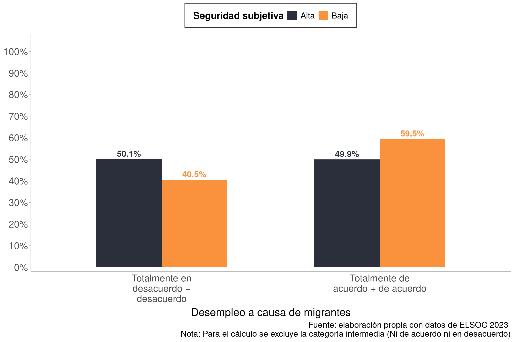
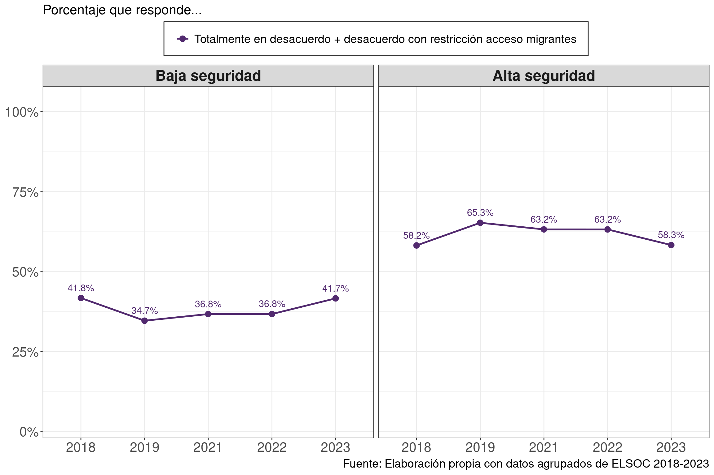

load(here('input/data/raw_data/elsoc.RData'))
elsoc_long <- elsoc_long_2016_2023 # acortar
missing_codes <- c(-999, -888, -777, -666)
elsoc_long <- elsoc_long %>%
mutate(across(everything(), ~ sjlabelled::set_na(.x, na = missing_codes)))1 Dimensión: Seguridad pública
El objetivo de este script es mostrar las decisiones metodológicas para la construcción de los subíndices de migración y seguridad para la producción de figuras con la información que se muestra en el reporte CEP 2025:
https://ocscoes.github.io/propuesta-medicion-elsoc/presentations/CEP_2025/cep_2025.html#/5/1
1.1 Data
Call original dataset
2 Variables & Recodes
2.1 Univariados: Variables
La dimensión de seguridad subjetiva se asocia a los siguientes ítems
Satisfacción con la seguridad del barrio
Percepción de inseguridad en el barrio
Donde:
find_var(data = elsoc_long,"barrio") # corresponde a t06_01
frq(elsoc_long$t06_01)
find_var(data = elsoc_long,"seguridad") # corresponde a t10
frq(elsoc_long$t10)Por su parte, las variables de migración que preguntan por la percepción en torno a la relación entre desempleo y migración, y por la restricción a migrantes:
find_var(data = elsoc_long,"desem") # corresponde a r12_04
frq(elsoc_long$r12_04)
find_var(data = elsoc_long,"restr") # corresponde a c37_05
frq(elsoc_long$c37_05)2.2 Selección, missings y recodificación
check1 <- elsoc_long %>%
select(t06_01, t10, r12_04, ola, c37_05)
# cheq
frq(check1$r12_04) # okGrado de acuerdo: Con llegada de [PER/HAI/VEN] aumenta el desempleo (x) <numeric>
# total N=20761 valid N=20456 mean=3.23 sd=1.17
Value | Label | N | Raw % | Valid % | Cum. %
------------------------------------------------------------------------
1 | Totalmente en desacuerdo | 1325 | 6.38 | 6.48 | 6.48
2 | En desacuerdo | 5781 | 27.85 | 28.26 | 34.74
3 | Ni en desacuerdo ni de acuerdo | 2594 | 12.49 | 12.68 | 47.42
4 | De acuerdo | 8338 | 40.16 | 40.76 | 88.18
5 | Totalmente de acuerdo | 2418 | 11.65 | 11.82 | 100.00
<NA> | <NA> | 305 | 1.47 | <NA> | <NA>frq(check1$c37_05)Grado de acuerdo: restricciones ingreso migrantes (x) <numeric>
# total N=20761 valid N=9532 mean=3.92 sd=1.01
Value | Label | N | Raw % | Valid % | Cum. %
-------------------------------------------------------------------------
1 | Totalmente en desacuerdo | 239 | 1.15 | 2.51 | 2.51
2 | En desacuerdo | 945 | 4.55 | 9.91 | 12.42
3 | Ni de acuerdo ni en desacuerdo | 1004 | 4.84 | 10.53 | 22.95
4 | De acuerdo | 4519 | 21.77 | 47.41 | 70.36
5 | Totalmente de acuerdo | 2825 | 13.61 | 29.64 | 100.00
<NA> | <NA> | 11229 | 54.09 | <NA> | <NA>2.3 Generar índice de seguridad subjetiva
check1$seg_sub <- rowMeans(check1[,c("t06_01","t10")], na.rm = TRUE)
slice(check1,1:10) %>% select(t06_01,t10,seg_sub, ola) # check ok t06_01 t10 seg_sub ola
1 2 3 2.5 1
2 3 3 3.0 1
3 3 2 2.5 1
4 1 3 2.0 1
5 1 1 1.0 1
6 1 1 1.0 1
7 3 3 3.0 1
8 3 3 3.0 1
9 1 3 2.0 1
10 2 3 2.5 1frq(check1$seg_sub) # okx <numeric>
# total N=20761 valid N=19588 mean=3.42 sd=0.97
Value | N | Raw % | Valid % | Cum. %
---------------------------------------
1.00 | 500 | 2.41 | 2.55 | 2.55
1.50 | 622 | 3.00 | 3.18 | 5.73
2.00 | 2060 | 9.92 | 10.52 | 16.24
2.50 | 1387 | 6.68 | 7.08 | 23.33
3.00 | 3063 | 14.75 | 15.64 | 38.96
3.50 | 1959 | 9.44 | 10.00 | 48.96
4.00 | 7309 | 35.21 | 37.31 | 86.28
4.50 | 1473 | 7.10 | 7.52 | 93.80
5.00 | 1215 | 5.85 | 6.20 | 100.00
<NA> | 1173 | 5.65 | <NA> | <NA>De acuerdo con la distribución observada de los valores del índice de seguridad subjetiva, se aprecia que hasta el valor 3.00 se acumula aproximadamente un 39% de los casos, mientras que los valores superiores a 3 concentran el 61% restante. Este patrón respalda empíricamente la decisión de establecer un punto de corte en 3, distinguiendo entre un grupo bajo (≤ 3) y uno alto (> 3). El criterio no solo asegura una diferenciación significativa en términos de frecuencia relativa, sino que además se alinea con la lógica de la escala, en la cual el valor tres constituye un punto de referencia intermedio.
2.4 Variación por ola
frq(check1$ola) # okIdentificador de ola de encuesta (x) <numeric>
# total N=20761 valid N=20761 mean=3.95 sd=1.94
Value | Label | N | Raw % | Valid % | Cum. %
-----------------------------------------------
1 | 2016 | 2927 | 14.10 | 14.10 | 14.10
2 | 2017 | 2473 | 11.91 | 11.91 | 26.01
3 | 2018 | 3748 | 18.05 | 18.05 | 44.06
4 | 2019 | 3417 | 16.46 | 16.46 | 60.52
5 | 2021 | 2740 | 13.20 | 13.20 | 73.72
6 | 2022 | 2730 | 13.15 | 13.15 | 86.87
7 | 2023 | 2726 | 13.13 | 13.13 | 100.00
<NA> | <NA> | 0 | 0.00 | <NA> | <NA># Tabla con el promedio de seguridad subjetiva por ola
seguridad_por_ola <- check1 %>%
group_by(ola) %>%
summarise(promedio_seg_subjetiva = mean(seg_sub, na.rm = TRUE))
if (!exists("table_format")) table_format <- "simple"
knitr::kable(seguridad_por_ola, format = table_format, caption = "Promedio de seguridad subjetiva por ola")| ola | promedio_seg_subjetiva |
|---|---|
| 1 | 3.276734 |
| 2 | 3.375253 |
| 3 | 3.389408 |
| 4 | 3.509804 |
| 5 | 3.633102 |
| 6 | 3.342146 |
| 7 | 3.487697 |
Los promedios de seguridad subjetiva por ola permanecen relativamente estables (rango 3.28–3.63; promedio global = 3.43, DE ≈ 0.11), indicando un patrón general de percepción ligeramente superior al punto medio de la escala. No obstante, la distribución individual muestra que alrededor del 39% de los casos se ubica en ≤3, por lo que se adoptó el umbral ≤3 / >3 para diferenciar grupos con baja vs. alta seguridad subjetiva. Este corte combina justificación empírica (frecuencias acumuladas) y coherencia conceptual con la métrica usada.
A continuación se presentan tablas que muestran el promedio de seguridad subjetiva por ola para cada categoría de respuesta en c37_05 y r12_04
# Tabla con el promedio de seguridad subjetiva por ola y por categorías de c37_05 (restricción migrantes) y r12_04 (desempleo migrantes)
seguridad_por_ola_migracion <- check1 %>%
group_by(ola, c37_05, r12_04) %>%
summarise(promedio_seg_subjetiva = mean(seg_sub, na.rm = TRUE), n = n()) %>%
ungroup()
knitr::kable(seguridad_por_ola_migracion, format = table_format, caption = "Promedio de seguridad subjetiva por ola y categoría de migración (c37_05)")| ola | c37_05 | r12_04 | promedio_seg_subjetiva | n |
|---|---|---|---|---|
| 1 | 1 | 3.274590 | 122 | |
| 1 | 2 | 3.322000 | 750 | |
| 1 | 3 | 3.365385 | 338 | |
| 1 | 4 | 3.264883 | 1327 | |
| 1 | 5 | 3.140532 | 338 | |
| 1 | 3.240385 | 52 | ||
| 2 | 1 | 3.504854 | 206 | |
| 2 | 2 | 3.434846 | 683 | |
| 2 | 3 | 3.400000 | 295 | |
| 2 | 4 | 3.299888 | 897 | |
| 2 | 5 | 3.339542 | 349 | |
| 2 | 3.500000 | 43 | ||
| 3 | 1 | 1 | 3.600000 | 30 |
| 3 | 1 | 2 | 3.047619 | 21 |
| 3 | 1 | 3 | 3.187500 | 8 |
| 3 | 1 | 4 | 3.666667 | 18 |
| 3 | 1 | 5 | 4.000000 | 9 |
| 3 | 1 | 4.062500 | 8 | |
| 3 | 2 | 1 | 3.426471 | 34 |
| 3 | 2 | 2 | 3.611570 | 121 |
| 3 | 2 | 3 | 3.560606 | 33 |
| 3 | 2 | 4 | 3.350877 | 57 |
| 3 | 2 | 5 | 3.363636 | 11 |
| 3 | 2 | 3.625000 | 8 | |
| 3 | 3 | 1 | 3.326087 | 23 |
| 3 | 3 | 2 | 3.404762 | 126 |
| 3 | 3 | 3 | 3.582090 | 67 |
| 3 | 3 | 4 | 3.439189 | 74 |
| 3 | 3 | 5 | 3.823529 | 17 |
| 3 | 3 | 3.769231 | 13 | |
| 3 | 4 | 1 | 3.714286 | 42 |
| 3 | 4 | 2 | 3.533613 | 238 |
| 3 | 4 | 3 | 3.513245 | 151 |
| 3 | 4 | 4 | 3.347778 | 450 |
| 3 | 4 | 5 | 3.205882 | 51 |
| 3 | 4 | 3.291667 | 24 | |
| 3 | 5 | 1 | 3.760870 | 23 |
| 3 | 5 | 2 | 3.398148 | 108 |
| 3 | 5 | 3 | 3.275510 | 49 |
| 3 | 5 | 4 | 3.381423 | 253 |
| 3 | 5 | 5 | 3.297794 | 136 |
| 3 | 5 | 3.681818 | 11 | |
| 3 | 1 | 3.424812 | 133 | |
| 3 | 2 | 3.421320 | 394 | |
| 3 | 3 | 3.352792 | 197 | |
| 3 | 4 | 3.212413 | 572 | |
| 3 | 5 | 3.301980 | 202 | |
| 3 | 3.500000 | 36 | ||
| 4 | 1 | 1 | 3.638889 | 36 |
| 4 | 1 | 2 | 3.482759 | 29 |
| 4 | 1 | 3 | 3.125000 | 4 |
| 4 | 1 | 4 | 3.333333 | 9 |
| 4 | 1 | 5 | 3.500000 | 6 |
| 4 | 1 | 2.000000 | 1 | |
| 4 | 2 | 1 | 3.595238 | 42 |
| 4 | 2 | 2 | 3.675141 | 177 |
| 4 | 2 | 3 | 3.585714 | 35 |
| 4 | 2 | 4 | 3.508197 | 61 |
| 4 | 2 | 5 | 3.850000 | 10 |
| 4 | 2 | 4.000000 | 2 | |
| 4 | 3 | 1 | 3.803030 | 33 |
| 4 | 3 | 2 | 3.586066 | 122 |
| 4 | 3 | 3 | 3.611842 | 76 |
| 4 | 3 | 4 | 3.421053 | 76 |
| 4 | 3 | 5 | 3.400000 | 10 |
| 4 | 3 | 4.000000 | 1 | |
| 4 | 4 | 1 | 3.687500 | 32 |
| 4 | 4 | 2 | 3.547826 | 230 |
| 4 | 4 | 3 | 3.413223 | 121 |
| 4 | 4 | 4 | 3.456653 | 496 |
| 4 | 4 | 5 | 3.538961 | 77 |
| 4 | 4 | 4.214286 | 7 | |
| 4 | 5 | 1 | 3.944444 | 18 |
| 4 | 5 | 2 | 3.611111 | 54 |
| 4 | 5 | 3 | 3.810811 | 37 |
| 4 | 5 | 4 | 3.472826 | 184 |
| 4 | 5 | 5 | 3.346405 | 153 |
| 4 | 5 | 3.900000 | 5 | |
| 4 | 1 | 3.666667 | 90 | |
| 4 | 2 | 3.596866 | 351 | |
| 4 | 3 | 3.447917 | 144 | |
| 4 | 4 | 3.437259 | 518 | |
| 4 | 5 | 3.300633 | 158 | |
| 4 | 3.375000 | 12 | ||
| 5 | 1 | 1 | 3.888889 | 9 |
| 5 | 1 | 2 | 3.500000 | 16 |
| 5 | 1 | 3 | 4.000000 | 2 |
| 5 | 1 | 4 | 3.666667 | 3 |
| 5 | 1 | 5 | 2.666667 | 3 |
| 5 | 2 | 1 | 4.086957 | 23 |
| 5 | 2 | 2 | 3.833333 | 114 |
| 5 | 2 | 3 | 3.941177 | 17 |
| 5 | 2 | 4 | 3.825000 | 40 |
| 5 | 2 | 5 | 3.500000 | 4 |
| 5 | 2 | 4.000000 | 2 | |
| 5 | 3 | 1 | 3.666667 | 12 |
| 5 | 3 | 2 | 3.700000 | 60 |
| 5 | 3 | 3 | 3.480000 | 50 |
| 5 | 3 | 4 | 3.400000 | 30 |
| 5 | 3 | 3.375000 | 8 | |
| 5 | 4 | 1 | 4.133333 | 15 |
| 5 | 4 | 2 | 3.717472 | 269 |
| 5 | 4 | 3 | 3.778947 | 95 |
| 5 | 4 | 4 | 3.589744 | 468 |
| 5 | 4 | 5 | 3.500000 | 54 |
| 5 | 4 | 4.000000 | 3 | |
| 5 | 5 | 1 | 3.727273 | 22 |
| 5 | 5 | 2 | 3.675676 | 74 |
| 5 | 5 | 3 | 3.482759 | 29 |
| 5 | 5 | 4 | 3.549133 | 173 |
| 5 | 5 | 5 | 3.327869 | 123 |
| 5 | 5 | 3.750000 | 4 | |
| 5 | 1 | 54 | ||
| 5 | 2 | 4.000000 | 304 | |
| 5 | 3 | 4.000000 | 126 | |
| 5 | 4 | 4.000000 | 399 | |
| 5 | 5 | 1.000000 | 121 | |
| 5 | 4.500000 | 14 | ||
| 6 | 1 | 1 | 3.500000 | 1 |
| 6 | 1 | 2 | 3.833333 | 6 |
| 6 | 1 | 3 | 2.750000 | 2 |
| 6 | 1 | 5 | 3.333333 | 3 |
| 6 | 1 | 3.500000 | 1 | |
| 6 | 2 | 1 | 3.535714 | 14 |
| 6 | 2 | 2 | 3.509091 | 55 |
| 6 | 2 | 3 | 3.700000 | 5 |
| 6 | 2 | 4 | 3.617647 | 17 |
| 6 | 2 | 5 | 4.500000 | 2 |
| 6 | 2 | 4.000000 | 1 | |
| 6 | 3 | 1 | 3.461539 | 13 |
| 6 | 3 | 2 | 3.358974 | 39 |
| 6 | 3 | 3 | 3.260870 | 23 |
| 6 | 3 | 4 | 3.500000 | 14 |
| 6 | 3 | 5 | 2.000000 | 3 |
| 6 | 3 | 4.000000 | 3 | |
| 6 | 4 | 1 | 3.629630 | 27 |
| 6 | 4 | 2 | 3.354545 | 275 |
| 6 | 4 | 3 | 3.291667 | 120 |
| 6 | 4 | 4 | 3.284198 | 424 |
| 6 | 4 | 5 | 3.096774 | 31 |
| 6 | 4 | 3.785714 | 7 | |
| 6 | 5 | 1 | 3.220000 | 25 |
| 6 | 5 | 2 | 3.465278 | 144 |
| 6 | 5 | 3 | 3.256944 | 72 |
| 6 | 5 | 4 | 3.365462 | 249 |
| 6 | 5 | 5 | 3.300725 | 138 |
| 6 | 5 | 2.000000 | 2 | |
| 6 | 1 | 3.398438 | 75 | |
| 6 | 2 | 3.375465 | 337 | |
| 6 | 3 | 3.362745 | 116 | |
| 6 | 4 | 3.299694 | 383 | |
| 6 | 5 | 3.261628 | 95 | |
| 6 | 3.375000 | 8 | ||
| 7 | 1 | 1 | 3.750000 | 4 |
| 7 | 1 | 2 | 3.333333 | 3 |
| 7 | 1 | 3 | 1.000000 | 1 |
| 7 | 1 | 4 | 3.250000 | 4 |
| 7 | 1 | 5 | 5.000000 | 2 |
| 7 | 2 | 1 | 3.666667 | 12 |
| 7 | 2 | 2 | 3.869565 | 23 |
| 7 | 2 | 3 | 3.500000 | 6 |
| 7 | 2 | 4 | 3.117647 | 17 |
| 7 | 2 | 5 | 3.000000 | 1 |
| 7 | 2 | 4.000000 | 1 | |
| 7 | 3 | 1 | 4.363636 | 11 |
| 7 | 3 | 2 | 3.928571 | 42 |
| 7 | 3 | 3 | 3.590909 | 22 |
| 7 | 3 | 4 | 3.533333 | 30 |
| 7 | 3 | 5 | 4.200000 | 5 |
| 7 | 3 | 1.000000 | 1 | |
| 7 | 4 | 1 | 3.578947 | 39 |
| 7 | 4 | 2 | 3.625000 | 192 |
| 7 | 4 | 3 | 3.512605 | 119 |
| 7 | 4 | 4 | 3.405797 | 415 |
| 7 | 4 | 5 | 3.567568 | 37 |
| 7 | 4 | 3.400000 | 10 | |
| 7 | 5 | 1 | 3.812500 | 32 |
| 7 | 5 | 2 | 3.589147 | 129 |
| 7 | 5 | 3 | 3.544304 | 79 |
| 7 | 5 | 4 | 3.346626 | 326 |
| 7 | 5 | 5 | 3.266272 | 170 |
| 7 | 5 | 3.333333 | 3 | |
| 7 | 1 | 3.739726 | 73 | |
| 7 | 2 | 3.461017 | 295 | |
| 7 | 3 | 3.477419 | 155 | |
| 7 | 4 | 3.497175 | 354 | |
| 7 | 5 | 3.525253 | 99 | |
| 7 | 3.571429 | 14 |
2.5 Recodificaciones para la preparación de gráficos
# recodificar indice seguridad subjetiva en bajo (<=3) y alto (>3)
check1 <- check1 %>%
mutate(seg_sub3 = case_when(
seg_sub >=1 & seg_sub <= 3 ~ "Bajo",
seg_sub > 3 & seg_sub <= 5 ~ "Alto",
TRUE ~ NA_character_
))
frq(check1$seg_sub3) # okx <character>
# total N=20761 valid N=19588 mean=1.39 sd=0.49
Value | N | Raw % | Valid % | Cum. %
----------------------------------------
Alto | 11956 | 57.59 | 61.04 | 61.04
Bajo | 7632 | 36.76 | 38.96 | 100.00
<NA> | 1173 | 5.65 | <NA> | <NA>Como se señaló anteriormente, la concentración de casos en la escala de valores respaldan la decisión de establecer los puntos de corte para un grupo bajo (≤ 3) y uno alto (> 3) de seguridad subjetiva.
#reordenar alto, medio, bajo
check1$seg_sub3 <- factor(check1$seg_sub3, levels = c("Alto", "Bajo"))
frq(check1$seg_sub3) # okx <categorical>
# total N=20761 valid N=19588 mean=1.39 sd=0.49
Value | N | Raw % | Valid % | Cum. %
----------------------------------------
Alto | 11956 | 57.59 | 61.04 | 61.04
Bajo | 7632 | 36.76 | 38.96 | 100.00
<NA> | 1173 | 5.65 | <NA> | <NA># recodificar r12_04 (desempleo migrantes) en muy de acuerdo = 1, el resto=0, sacando los NAs
check1 <- check1 %>%
mutate(desempleo_migrantes5 = case_when(
r12_04 == 5 ~ "Muy de acuerdo",
r12_04 %in% c(1, 2, 3, 4) ~ "Otro",
TRUE ~ NA_character_
))
frq(check1$desempleo_migrantes5) # okx <character>
# total N=20761 valid N=20456 mean=1.88 sd=0.32
Value | N | Raw % | Valid % | Cum. %
-------------------------------------------------
Muy de acuerdo | 2418 | 11.65 | 11.82 | 11.82
Otro | 18038 | 86.88 | 88.18 | 100.00
<NA> | 305 | 1.47 | <NA> | <NA># recodificar r12_04 (desempleo migrantes) en muy en desacuerdo = 1, el resto=0, sacando los NAs
check1 <- check1 %>%
mutate(desempleo_migrantes1 = case_when(
r12_04 == 1 ~ "Muy en desacuerdo",
r12_04 %in% c(2, 3, 4, 5) ~ "Otro",
TRUE ~ NA_character_
))
frq(check1$desempleo_migrantes1) # okx <character>
# total N=20761 valid N=20456 mean=1.94 sd=0.25
Value | N | Raw % | Valid % | Cum. %
----------------------------------------------------
Muy en desacuerdo | 1325 | 6.38 | 6.48 | 6.48
Otro | 19131 | 92.15 | 93.52 | 100.00
<NA> | 305 | 1.47 | <NA> | <NA># recodificar c37_05 (restriccion migrantes) en muy de acuerdo = 1, el resto=0, sacando los NAs
check1 <- check1 %>%
mutate(restriccion_migrantes5 = case_when(
c37_05 == 5 ~ "Muy de acuerdo",
c37_05 %in% c(1, 2, 3, 4) ~ "Otro",
TRUE ~ NA_character_
))
frq(check1$restriccion_migrantes5) # okx <character>
# total N=20761 valid N=9532 mean=1.70 sd=0.46
Value | N | Raw % | Valid % | Cum. %
-------------------------------------------------
Muy de acuerdo | 2825 | 13.61 | 29.64 | 29.64
Otro | 6707 | 32.31 | 70.36 | 100.00
<NA> | 11229 | 54.09 | <NA> | <NA># recodificar c37_05 (restriccion migrantes) en muy en desacuerdo = 1, el resto=0, sacando los NAs
check1 <- check1 %>%
mutate(restriccion_migrantes1 = case_when(
c37_05 == 1 ~ "Muy en desacuerdo",
c37_05 %in% c(2, 3, 4, 5) ~ "Otro",
TRUE ~ NA_character_
))
frq(check1$restriccion_migrantes1) # okx <character>
# total N=20761 valid N=9532 mean=1.97 sd=0.16
Value | N | Raw % | Valid % | Cum. %
----------------------------------------------------
Muy en desacuerdo | 239 | 1.15 | 2.51 | 2.51
Otro | 9293 | 44.76 | 97.49 | 100.00
<NA> | 11229 | 54.09 | <NA> | <NA>Al examinar la distribución de las respuestas para las variables de migración, se observa que las categorías extremas concentran una fracción relativamente reducida de los casos: alrededor del 12% y el 14% para “Muy de acuerdo” y 6.5% y apenas 1.15% para “Muy en desacuerdo”. En contraste, cerca del 90% de las observaciones se ubican en categorías distintas a los extremos. Esta asimetría sugiere que, si bien es posible representar gráficamente los extremos frente al resto para enfatizar la presencia de posiciones polarizadas, la interpretación debe considerar que la mayor parte de la variación se concentra en la categoría agregada “Otro”. Por ello, dependiendo del objetivo analítico, puede ser preferible distinguir dos grupos (De acuerdo y En desacuerdo), lo que permite capturar con mayor claridad la disposición de las respuestas para fines visuales.
Tabla cruzada entre Seguridad Subjetiva y Restricción de Migrantes para observar los porcentajes y su distribución por ola
tabla_cruzada <- check1 %>%
filter(!is.na(seg_sub3) & !is.na(restriccion_migrantes5) & restriccion_migrantes5 == "Muy de acuerdo") %>%
group_by(ola, seg_sub3) %>%
summarise(n = n()) %>%
group_by(ola) %>%
mutate(total_ola = sum(n),
porcentaje = (n / total_ola) * 100) %>%
ungroup()
knitr::kable(tabla_cruzada, format = table_format, caption = "Tabla cruzada de seguridad subjetiva y restricción migrantes (Muy de acuerdo) por ola - porcentaje dentro de ola")| ola | seg_sub3 | n | total_ola | porcentaje |
|---|---|---|---|---|
| 3 | Alto | 335 | 580 | 57.75862 |
| 3 | Bajo | 245 | 580 | 42.24138 |
| 4 | Alto | 290 | 451 | 64.30155 |
| 4 | Bajo | 161 | 451 | 35.69845 |
| 5 | Alto | 259 | 424 | 61.08491 |
| 5 | Bajo | 165 | 424 | 38.91509 |
| 6 | Alto | 375 | 630 | 59.52381 |
| 6 | Bajo | 255 | 630 | 40.47619 |
| 7 | Alto | 429 | 738 | 58.13008 |
| 7 | Bajo | 309 | 738 | 41.86992 |
tabla_cruzada <- check1 %>%
filter(!is.na(seg_sub3) & !is.na(restriccion_migrantes1) & restriccion_migrantes1 == "Muy en desacuerdo") %>%
group_by(ola, seg_sub3) %>%
summarise(n = n()) %>%
group_by(ola) %>%
mutate(total_ola = sum(n),
porcentaje = (n / total_ola) * 100) %>%
ungroup()
knitr::kable(tabla_cruzada, format = table_format, caption = "Tabla cruzada de seguridad subjetiva y restricción migrantes (Muy en desacuerdo) por ola - porcentaje dentro de ola")| ola | seg_sub3 | n | total_ola | porcentaje |
|---|---|---|---|---|
| 3 | Alto | 61 | 94 | 64.89362 |
| 3 | Bajo | 33 | 94 | 35.10638 |
| 4 | Alto | 56 | 85 | 65.88235 |
| 4 | Bajo | 29 | 85 | 34.11765 |
| 5 | Alto | 20 | 33 | 60.60606 |
| 5 | Bajo | 13 | 33 | 39.39394 |
| 6 | Alto | 10 | 13 | 76.92308 |
| 6 | Bajo | 3 | 13 | 23.07692 |
| 7 | Alto | 9 | 14 | 64.28571 |
| 7 | Bajo | 5 | 14 | 35.71429 |
2.6 Gráficos: Seguridad Subjetiva y Desempleo migrantes
# Recodificar algo de acuerdo = 4 y muy de acuerdo = 5 como "De acuerdo", 3= "ni de acuerdo ni desacuerdo", y 1 y 2 como "en desacuerdo, sacando los NAs
elsoc_long <- elsoc_long %>%
mutate(desempleo_migrantes = case_when(
r12_04 %in% c(1, 2) ~ "Totalmente en desacuerdo + desacuerdo",
r12_04 == 3 ~ "Ni de acuerdo ni en desacuerdo",
r12_04 %in% c(4, 5) ~ "Totalmente de acuerdo + de acuerdo",
TRUE ~ NA_character_
))
# order from "En desacuerdo", "Ni de acuerdo ni en desacuerdo", "De acuerdo"
elsoc_long$desempleo_migrantes <- factor(elsoc_long$desempleo_migrantes, levels = c("Totalmente en desacuerdo + desacuerdo", "Ni de acuerdo ni en desacuerdo", "Totalmente de acuerdo + de acuerdo"))
frq(elsoc_long$desempleo_migrantes) # okx <categorical>
# total N=20761 valid N=20456 mean=2.18 sd=0.92
Value | N | Raw % | Valid % | Cum. %
------------------------------------------------------------------------
Totalmente en desacuerdo + desacuerdo | 7106 | 34.23 | 34.74 | 34.74
Ni de acuerdo ni en desacuerdo | 2594 | 12.49 | 12.68 | 47.42
Totalmente de acuerdo + de acuerdo | 10756 | 51.81 | 52.58 | 100.00
<NA> | 305 | 1.47 | <NA> | <NA># generar indice promedio de seguridad subjetiva con t06_01 y t10
elsoc_long <- elsoc_long %>%
mutate(seg_sub = rowMeans(select(., t06_01, t10), na.rm = TRUE))
frq(elsoc_long$seg_sub) # okx <numeric>
# total N=20761 valid N=19588 mean=3.42 sd=0.97
Value | N | Raw % | Valid % | Cum. %
---------------------------------------
1.00 | 500 | 2.41 | 2.55 | 2.55
1.50 | 622 | 3.00 | 3.18 | 5.73
2.00 | 2060 | 9.92 | 10.52 | 16.24
2.50 | 1387 | 6.68 | 7.08 | 23.33
3.00 | 3063 | 14.75 | 15.64 | 38.96
3.50 | 1959 | 9.44 | 10.00 | 48.96
4.00 | 7309 | 35.21 | 37.31 | 86.28
4.50 | 1473 | 7.10 | 7.52 | 93.80
5.00 | 1215 | 5.85 | 6.20 | 100.00
<NA> | 1173 | 5.65 | <NA> | <NA>check2 <- elsoc_long %>%
select(ola, seg_sub, desempleo_migrantes, segmento, estrato, ponderador_long_total)
# cheq
frq(check2$desempleo_migrantes) # okx <categorical>
# total N=20761 valid N=20456 mean=2.18 sd=0.92
Value | N | Raw % | Valid % | Cum. %
------------------------------------------------------------------------
Totalmente en desacuerdo + desacuerdo | 7106 | 34.23 | 34.74 | 34.74
Ni de acuerdo ni en desacuerdo | 2594 | 12.49 | 12.68 | 47.42
Totalmente de acuerdo + de acuerdo | 10756 | 51.81 | 52.58 | 100.00
<NA> | 305 | 1.47 | <NA> | <NA>check2 <- check2 %>% # Se pondera la base
as_survey_design(ids = segmento,
strata = estrato,
weights = ponderador_long_total,
nest = T)
check2 %>%
select(ola, seg_sub, desempleo_migrantes) %>%
# FILTRAR PRIMERO: quitar la categoría intermedia ANTES de cualquier cálculo
filter(desempleo_migrantes != "Ni de acuerdo ni en desacuerdo") %>% # ajusta el nombre exacto
mutate(seg_sub = case_when(
seg_sub <= 3 ~ "Baja",
seg_sub > 3 ~ "Alta"
),
desempleo_migrantes = forcats::fct_relabel(
desempleo_migrantes, ~ str_wrap(.x, 20))) %>%
tidyr::drop_na() %>%
filter(ola == last(ola)) %>%
group_by(desempleo_migrantes, seg_sub) %>%
survey_count(vartype = NULL) %>%
group_by(seg_sub) %>%
mutate(
prop = 100 * n / sum(n), # porcentaje dentro de cada nivel de seguridad
label = scales::percent(prop/100, accuracy = 0.1)
) %>%
ggplot(aes(x = desempleo_migrantes, y = prop, fill = seg_sub)) +
geom_col(position = position_dodge(width = 0.6), width = 0.6) +
geom_text(
aes(label = label, color = seg_sub),
position = position_dodge(width = 0.6),
vjust = -0.4, size = 5, fontface = "bold", show.legend = FALSE
) +
scale_fill_manual(
name = "Seguridad subjetiva",
values = c("Alta" = "#2b2f3c", "Baja" = "#F9913D")
) +
scale_color_manual(
values = c("Alta" = "#2b2f3c", "Baja" = "#F9913D")
) +
scale_y_continuous(
labels = function(p){paste0(p, "%")},
limits = c(0,100),
breaks = seq(0,100, by = 10),
expand = expansion(mult = c(0.02, 0.08))
) +
labs(
x = "Desempleo a causa de migrantes",
y = NULL,
caption = "Fuente: elaboración propia con datos de ELSOC 2023 \n Nota: Para el cálculo se excluye la categoría intermedia (Ni de acuerdo ni en desacuerdo)"
) +
theme_ggdist() +
theme(
plot.title = element_text(size = 24, face = "bold", hjust = 0.5),
plot.subtitle = element_text(size = 16, face = "italic", hjust = 0.5),
plot.caption = element_text(size = 14),
axis.title.x = element_text(size = 18),
axis.title.y = element_text(size = 18),
axis.text.x = element_text(size = 16),
axis.text.y = element_text(size = 16),
legend.title = element_text(size = 16, face = "bold"),
legend.text = element_text(size = 14),
legend.box.background = element_rect(color = "grey20", fill = "white", linewidth = 0.5),
legend.background = element_rect(fill = "white", color = NA),
legend.margin = margin(t = 6, r = 8, b = 6, l = 8),
legend.box.margin = margin(t = 6, r = 6, b = 6, l = 6),
legend.position = "top",
legend.direction = "horizontal"
) +
guides(
color = guide_legend(
title.position = "top",
label.position = "right",
nrow = 1, byrow = TRUE,
keywidth = unit(14, "pt"),
keyheight = unit(10, "pt")
)
)

2.7 Gráficos Seguridad Subjetiva y Restricción Migrantes (Longitudinal)
# Recodificar algo de acuerdo = 4 y muy de acuerdo = 5 como "De acuerdo", 3= "ni de acuerdo ni desacuerdo", y 1 y 2 como "en desacuerdo, sacando los NAs
elsoc_long <- elsoc_long %>%
mutate(restriccion_migrantes = case_when(
c37_05 %in% c(1, 2) ~ "Totalmente en desacuerdo + desacuerdo",
c37_05 == 3 ~ "Ni de acuerdo ni en desacuerdo",
c37_05 %in% c(4, 5) ~ "Totalmente de acuerdo + de acuerdo",
TRUE ~ NA_character_
))
# order from "En desacuerdo", "Ni de acuerdo ni en desacuerdo", "De acuerdo"
elsoc_long$restriccion_migrantes <- factor(elsoc_long$restriccion_migrantes, levels = c("Totalmente en desacuerdo + desacuerdo", "Ni de acuerdo ni en desacuerdo", "Totalmente de acuerdo + de acuerdo"))
frq(elsoc_long$restriccion_migrantes) # okx <categorical>
# total N=20761 valid N=9532 mean=2.65 sd=0.69
Value | N | Raw % | Valid % | Cum. %
------------------------------------------------------------------------
Totalmente en desacuerdo + desacuerdo | 1184 | 5.70 | 12.42 | 12.42
Ni de acuerdo ni en desacuerdo | 1004 | 4.84 | 10.53 | 22.95
Totalmente de acuerdo + de acuerdo | 7344 | 35.37 | 77.05 | 100.00
<NA> | 11229 | 54.09 | <NA> | <NA># generar indice promedio de seguridad subjetiva con t06_01 y t10
elsoc_long <- elsoc_long %>%
mutate(seg_sub = rowMeans(select(., t06_01, t10), na.rm = TRUE))
frq(elsoc_long$seg_sub) # okx <numeric>
# total N=20761 valid N=19588 mean=3.42 sd=0.97
Value | N | Raw % | Valid % | Cum. %
---------------------------------------
1.00 | 500 | 2.41 | 2.55 | 2.55
1.50 | 622 | 3.00 | 3.18 | 5.73
2.00 | 2060 | 9.92 | 10.52 | 16.24
2.50 | 1387 | 6.68 | 7.08 | 23.33
3.00 | 3063 | 14.75 | 15.64 | 38.96
3.50 | 1959 | 9.44 | 10.00 | 48.96
4.00 | 7309 | 35.21 | 37.31 | 86.28
4.50 | 1473 | 7.10 | 7.52 | 93.80
5.00 | 1215 | 5.85 | 6.20 | 100.00
<NA> | 1173 | 5.65 | <NA> | <NA>#Generar subset para nueva base ponderada
check3 <- elsoc_long %>%
select(ola, seg_sub, restriccion_migrantes, segmento, estrato, ponderador_long_total)
# cheq
frq(check3$restriccion_migrantes) # okx <categorical>
# total N=20761 valid N=9532 mean=2.65 sd=0.69
Value | N | Raw % | Valid % | Cum. %
------------------------------------------------------------------------
Totalmente en desacuerdo + desacuerdo | 1184 | 5.70 | 12.42 | 12.42
Ni de acuerdo ni en desacuerdo | 1004 | 4.84 | 10.53 | 22.95
Totalmente de acuerdo + de acuerdo | 7344 | 35.37 | 77.05 | 100.00
<NA> | 11229 | 54.09 | <NA> | <NA>#Recodificar seguridad subjetiva en baja y alta en la nueva base
check3 <- check3 %>%
mutate(seg_sub2 = case_when(
seg_sub >= 1 & seg_sub <= 3 ~ "Baja",
seg_sub > 3 & seg_sub <= 5 ~ "Alta",
TRUE ~ NA_character_
))
check3$seg_sub2 <- factor(check3$seg_sub2, levels = c("Alta", "Baja"))
frq(check3$seg_sub2)x <categorical>
# total N=20761 valid N=19588 mean=1.39 sd=0.49
Value | N | Raw % | Valid % | Cum. %
----------------------------------------
Alta | 11956 | 57.59 | 61.04 | 61.04
Baja | 7632 | 36.76 | 38.96 | 100.00
<NA> | 1173 | 5.65 | <NA> | <NA>2.8 Gráfico
check3 <- check3 %>% #Se pondera la base
as_survey_design(ids = segmento,
strata = estrato,
weights = ponderador_long_total,
nest = T)
check3 %>%
select(ola, seg_sub, restriccion_migrantes) %>%
filter(restriccion_migrantes == "Totalmente en desacuerdo + desacuerdo") %>%
mutate(
seg_sub = case_when(
seg_sub <= 3 ~ "Baja seguridad",
seg_sub > 3 ~ "Alta seguridad"
),
seg_sub = factor(
seg_sub,
levels = c("Baja seguridad", "Alta seguridad")),
ola = case_when(ola == 1 ~ "2016",
ola == 2 ~ "2017",
ola == 3 ~ "2018",
ola == 4 ~ "2019",
ola == 5 ~ "2021",
ola == 6 ~ "2022",
ola == 7 ~ "2023"),
ola = factor(ola, levels = c("2016",
"2017",
"2018",
"2019",
"2021",
"2022",
"2023"))
) %>%
tidyr::drop_na() %>%
group_by(ola, seg_sub) %>%
survey_count(vartype = NULL) %>%
ungroup() %>%
group_by(ola) %>%
mutate(
prop = 100 * n / sum(n),
label = scales::percent(prop/100, accuracy = 0.1),
grupo = "Totalmente en desacuerdo + desacuerdo con restricción acceso migrantes" # 👈 variable para la leyenda
) %>%
ggplot(aes(x = ola, y = prop, group = seg_sub)) +
geom_point(aes(color = grupo), size = 3) + # 👈 color mapeado
geom_line(aes(color = grupo), linewidth = 1) +
facet_wrap(~seg_sub) +
geom_text(
aes(label = label),
color = "#522A6F", # aquí sí puede quedar fijo, no es necesario en la leyenda
vjust = -1, size = 4, show.legend = FALSE
) +
scale_color_manual(
name = NULL, # 👈 título de la leyenda (puedes dejarlo NULL o poner texto)
values = c("Totalmente en desacuerdo + desacuerdo con restricción acceso migrantes" = "#522A6F")
) +
scale_y_continuous(
labels = function(p){paste0(p, "%")},
limits = c(0,100),
breaks = seq(0,100, by = 25),
expand = expansion(mult = c(0.02, 0.08))
) +
labs(
subtitle = "Porcentaje que responde...",
x = NULL,
y = NULL,
caption = "Fuente: Elaboración propia con datos agrupados de ELSOC 2018-2023"
) +
theme_bw() +
theme(
plot.title = element_text(size = 24, face = "bold", hjust = 0),
plot.subtitle = element_text(size = 16, hjust = 0),
plot.caption = element_text(size = 14),
axis.title.x = element_text(size = 18),
axis.title.y = element_text(size = 18),
axis.text.x = element_text(size = 16),
axis.text.y = element_text(size = 16),
legend.title = element_text(size = 16, face = "bold"),
legend.text = element_text(size = 14),
legend.box.background = element_rect(color = "grey20", fill = "white", linewidth = 0.5),
legend.background = element_rect(fill = "white", color = NA),
legend.margin = margin(t = 6, r = 8, b = 6, l = 8),
legend.box.margin = margin(t = 6, r = 6, b = 6, l = 6),
legend.position = "top",
legend.direction = "horizontal",
strip.text = element_text(size = 18, face = "bold", hjust = 0.5)
)
